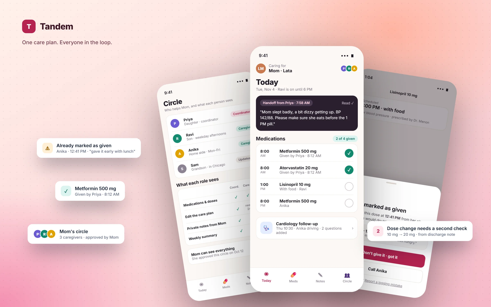
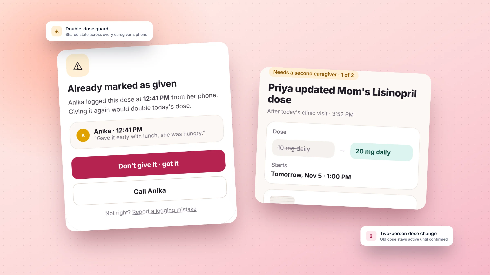
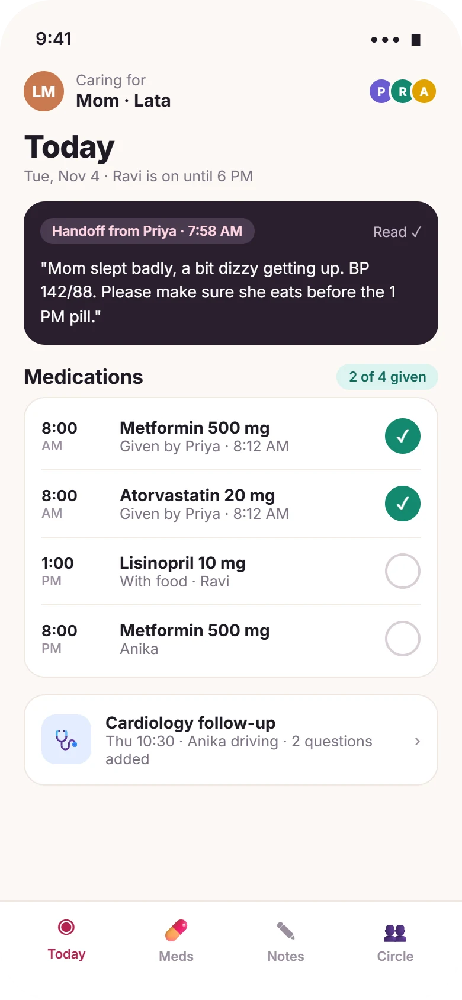
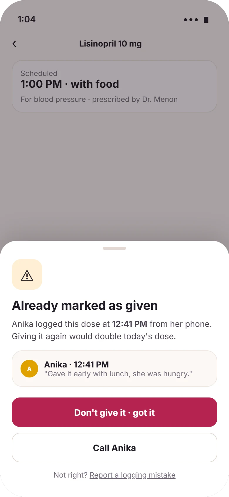
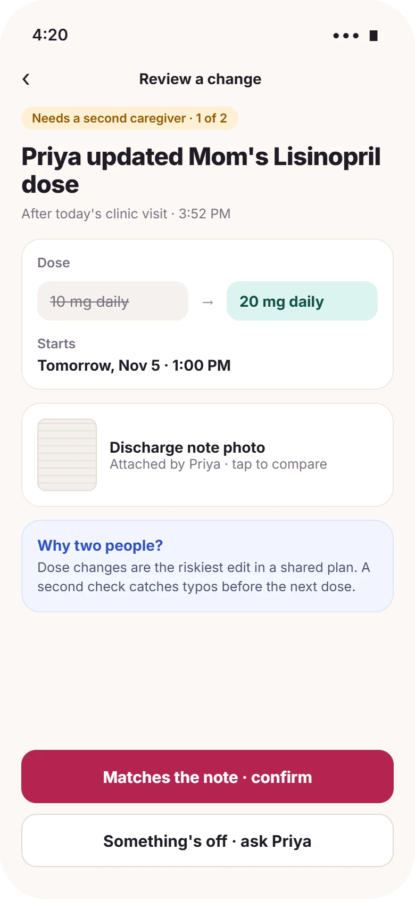
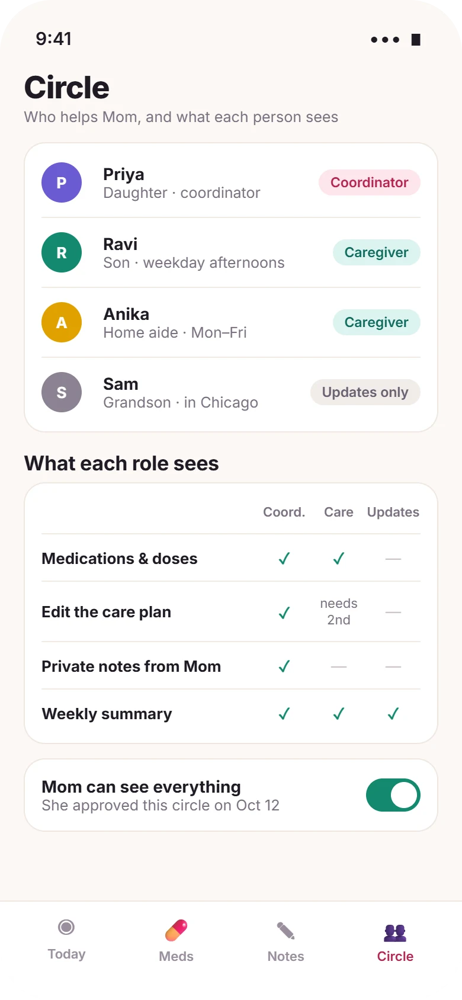

Mobile app · Multi-user collaboration · Consumer health
Tandem
One shared care plan for a family looking after a parent, so nobody gives the same pill twice.
Type
Self-initiated concept
My role
Solo: research synthesis, interaction design, UI
Platform
iOS and Android app
Methods
Secondary research, moment mapping, permission modeling, decision log

Concept projectI didn't interview caregivers for this project. The scale of the problem comes from a published national study (sources at the end), and the design choices are reasoned from the coordination risks it describes. The validation plan shows how I'd test it with real families. All people and prescriptions in the screens are fictional.
Overview
Long story short
Context
When a parent needs daily care, it's rarely one person's job. Siblings split shifts, a home aide covers weekdays, a grandchild helps from another city. They coordinate in group chats, on fridge notes and by phone.
Problem
The care is shared, but the information isn't. The dangerous moments are the handoffs: a dose given twice, a dose change only one person heard, or a symptom mentioned in a chat that the next person never reads.
My role
Framed the problem from national caregiving data and mapped the moments where shared care goes wrong.
Modeled roles and permissions for a family, including the parent's own consent.
Designed the core flows and wrote the decision log, edge cases and validation plan.
Solution
A shared "Today" view with who did what, and when; a double-dose guard that works across phones; two-person review for dose changes; and a circle with roles the parent approves.
Deliverables
Risk-moment map, permission model, decision log, 4 high-fidelity screens, edge-case behavior, a validation plan and metrics.
The problem
A quarter of adults are caregivers, and most do it alongside a job
AARP and the National Alliance for Caregiving's 2025 report, Caregiving in the US, describes how large and how demanding family caregiving has become1:
63MAmericans are family caregivers, about 1 in 4 adultsAARP / NAC 2025 [1]
+45%more caregivers than a decade earlierAARP / NAC 2025 [1]
6 in 10also work, and half of those report work disruptionsAARP / NAC 2025 [1]
~1 in 4provide 40 or more hours of care a weekAARP / NAC 2025 [1]
Caregivers who also work, or who care for children too, can't be present all the time. So care gets split, and every split creates a handoff. Most consumer apps in this space are built for one person tracking their own medication. They don't model several people acting on one person's care.
How might we
How might we let several people share one person's care, so each of them always knows what's been done, what's changed and what's next, without taking away the parent's say?
The circle
One person cared for, many people caring
The core design problem is that the "user" is a group. I modeled a typical circle as roles, not individuals, because the same person can be a coordinator in one family and a weekend helper in another.
01The parent · care recipient
Their health, their data, their home. Needs dignity and a real say in who sees what, not to be managed around.
02Coordinator
Usually one adult child. Holds the plan, talks to doctors, and carries the mental load of making sure nothing is missed.
03Hands-on caregivers
Siblings on shifts, a paid aide. Need to know right now what's due, what's been done and what happened since they last looked.
04Updates only
Family further away. Want to help and stay informed without touching anything clinical.
Risk moments
Where shared care goes wrong
Instead of a full journey map, I focused on the specific moments where information gets lost between people, and what each moment needs from the product.
MomentTwo people both think a dose is theirs to give.
→
What goes wrongThe parent gets a double dose, or none, and nobody notices until later.
→
Product responseEach dose has an owner and a live "given by" record. Trying to give it again triggers a warning.
MomentA doctor changes a dose during a visit only one person attended.
→
What goes wrongOthers keep following the old plan, or the change is entered with a typo.
→
Product responseDose changes need a second caregiver to confirm against the attached note before they take effect.
MomentShift change: "Mom was dizzy this morning."
→
What goes wrongIt's buried in a group chat between photos and logistics.
→
Product responseA handoff note pinned to the top of Today, with a read receipt.
MomentA relative wants to help but sees everything, including private notes.
→
What goes wrongThe parent loses privacy, or the family over-shares to stay "in the loop."
→
Product responseRole-based visibility, approved by the parent, with an "updates only" role.
Principles
Three rules for a shared care app
01
Always show who, and when
Every action carries a name and a time. In a shared space, "done" without "by whom" is how mistakes happen.
02
Add friction only where harm is possible
Logging a dose takes one tap. Changing a dose takes two people. Friction follows risk, not habit.
03
The parent is a member, not a subject
They approve the circle, can see everything by default, and can keep notes private. Consent is part of the product.
Decision log
Three choices, and what I gave up
Decision 01
How do we stop a dose from being given twice?
Reminders onlyEach person gets a reminder. Simple, but two reminders on two phones is exactly how double doses happen.
Shared state plus a hard warningOne record per dose. Anyone who tries to log it again sees who already gave it, and when.
Lock the dose to one personPrevents duplicates, but fails the moment plans change and someone else has to step in.
WhyThe risk isn't forgetting; it's not knowing what someone else did. Showing the other person's action, with their note, answers that directly.
Trade-off acceptedIt needs a reliable sync. Offline phones queue the log and show "not yet synced", so a pending record never looks final.
Decision 02
Who can change the care plan?
Anyone in the circleFast, and it fits informal family life. But one typo in a dose spreads to everyone at once.
Only the coordinatorSafe, but it makes one person a bottleneck and adds to the load the app should reduce.
Caregivers propose, a second caregiver confirmsDose and schedule changes go live only after someone else checks them against the attached note.
WhyTwo-person checks are a familiar safety pattern for high-risk changes. Here it also spreads knowledge: two people now know about the change.
Trade-off acceptedSlower updates. The change shows a clear start time, and the old dose stays active until it's confirmed, so nothing is left in limbo.
Decision 03
How much should each person see?
Everyone sees everythingSimplest to build and explain, but it removes the parent's privacy by default.
Three roles, approved by the parentCoordinator, caregiver and updates-only, with a clear table of what each can see and do.
Custom permissions per personMaximum control, but families won't configure a matrix, and wrong settings are worse than none.
WhyThree roles cover the circles I modeled, and a visible table makes the rules understandable to someone in their seventies.
Trade-off acceptedSome families will want an exception. That's a reason to test the roles, not to start with a settings screen.

Spotlight · Friction only where harm is possibleLogging takes one tap; giving a dose twice or changing a dose asks for a second look.
Design
Four screens built around handoffs

TodayHandoff note first, then doses with who gave each one.

Double-dose guardShows who already gave it, and their note.

Change reviewOld versus new, the source, and a second check.

CircleRoles, what each sees, and the parent's approval.
Closer look · Today
The first thing you see is what changed since you last looked
A
Handoff before the to-do listThe morning caregiver's note sits on top, in a dark card, with a read receipt so she knows it landed.
B
Who's on, right now"Ravi is on until 6 PM" answers the first question anyone in the circle asks.
C
Every dose has a name"Given by Priya · 8:12 AM" rather than a bare checkmark.
D
Appointments carry their prepWho's driving and which questions to ask the cardiologist, gathered from everyone.
Closer look · Safety moments
Friction, used only where someone could be harmed
A
The safe choice is the big button"Don't give it · got it" is primary. Calling the other caregiver is the next option.
B
Context, not just a blockAnika's own note ("gave it early with lunch") explains why it's already done.
C
Old dose struck through, new dose highlightedThe change is unmistakable, and it starts at a stated time.
D
Why two people?One sentence explains the extra step, so it reads as care rather than bureaucracy.
Visual language
A look that does a job
Caregiving is emotional, so the palette is warm rather than clinical. A deep plum card carries handoff notes, the most human content in the app, and rose is kept for the one action that matters on each screen.
Rose#b4234fPrimary action
Plum#2a1f2eHandoff notes
Care teal#13896fDose given
Linen#fbf8f5Background
Amber#e0a100Warnings
Violet#6b5bd2People, avatars
Typeface
Aa
Inter
Title 30Heading 17Body 15 · the minimum in the appCaption 12 · sources and timestamps
Large, high-contrast type for older eyes: 15px minimum body, 26px titles, 50px touch targets.
Components
CoordinatorCaregiverUpdates onlyNeeds a second caregiver
✓Dose state · given by a named person, or pending
10 mg daily→20 mg dailyChange diff
Don't give it · got itCall Anika
Edge cases
When real life doesn't follow the plan
A phone is offline when a dose is logged
Risk: others think it hasn't been given.
Behavior: the log is queued and shown as "Not synced yet" on that phone; others see "Ravi may have logged this. Check with him."
A dose is logged by mistake
Risk: a real dose is skipped because the record says it's done.
Behavior: "Report a logging mistake" undoes it with a reason, and alerts whoever is on.
Nobody is available to confirm a change
Risk: an urgent dose change can't go live.
Behavior: the coordinator can confirm alone with a reason; the circle sees it was a single-person change.
The parent's ability to decide changes
Risk: consent settings become out of date.
Behavior: consent is revisited with a light prompt every few months, and can be handed to a named person they choose.
A paid aide leaves the job
Risk: they keep access to health information.
Behavior: paid-caregiver roles have an end date and need renewal.
Validation plan
How I'd test this with real families
Question
Method
Participants
We'd keep going if…
How do families coordinate care today, and where does it break?
Remote interviews plus a look at their real group chats and notes (with consent)
8 families, at least 2 people each
Handoffs and dose confusion come up unprompted
Do two weeks of shared logging hold up?
Diary study with a clickable prototype
5 families
Most doses are logged by the person who gave them, without reminders
Does the double-dose warning work under pressure?
Scenario-based usability test, including a timed version
10 caregivers, including 3 over 60
Everyone stops and checks before giving a second dose
Do the three roles match how families think?
Card sort of information types by role
12 caregivers + 4 care recipients
Most groupings fit the three roles; patterns in any exceptions
Do care recipients feel respected?
Interviews with older adults who receive care
6 care recipients
They describe the circle settings as their own choice
Success metrics
How we'd know it's helping
North star
Share of scheduled doses logged by the person who gave them, on time
Accurate shared logs are what everything else in the product depends on.
Leading signals
Handoff notes read before the next scheduled dose
Dose changes confirmed within a day
Circles with at least 2 active caregivers
Guardrails
Double-dose warnings that were overridden
Care recipients who switch off "see everything"
Notification volume per caregiver
Reflection
What this project taught me
Designing for a group is a different problem
Most screens assume one user. Here, the most important information on a screen was what someone else had done.
Safety and dignity pull in different directions
Sharing more makes care safer; sharing less protects the parent. Roles approved by the parent were my way to hold both.
Next I'd watch a real handoff
The risk moments are reasoned, not observed. Sitting in on a shift change would test them faster than any prototype.